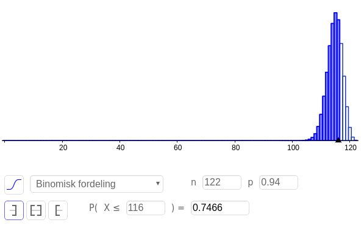

Oppgavesamling i R1
Innhold
Sannsynlighetsregning
Regnværsdagene
Inspirert av «Logic – A very short introduction» av Graham Pries, Oxford University Press, 2000
Turid fører statistikk over været. Hun har definert seg hendelesene \(V\) for «været var varmt» og \(R\) for «det regnet». «✓» betyr «hendelsen inntraff den dagen». En gitt uke har hun fått følgende oversikt:
| man | tirs | ons | tors | fre | lør | søn | |
|---|---|---|---|---|---|---|---|
| \(V\) | ✓ | ✓ | ✓ | ✓ | |||
| \(R\) | ✓ | ✓ | ✓ |
Ved å bruke tabellen over, hva er…
- a
- \(P(V)\)?
- b
- \(P(R)\)?
- c
- \(P(V∩R)\)?
- d
- \(P(V∪R)\)?
- e
- \(P(V|R)\)?
- f
- \(P(R|V)\)?
…og, til slutt…
- g
- bruk Bayes' setning til å kontrollere f ved hjelp av svarene du fikk i a til e.
Luremynten bayes
I en sekk med ti mynter, er en av myntene slik at den har mynt på begge sider, dette er luremynten. De øvrige er «vanlige» og har dermed en side mynt og en side kron.
- a
- Vi trekker en mynt og kaster den, det blir mynt. Hva er sannsynligheten for at vi trakk luremynten?
- b
- Vi trekker atter en mynt (mynten fra forrige oppgave er lagt tilbake). Med denne kaster vi mynt to ganger på rad. Hva er nå sannsynligheten for at vi trakk luremynten?
De to terningene betinget utfordring løsning
Jeg kaster to terninger og holder dem skjult for deg. Jeg ser på resultatet og sier til deg «minst en av dem blei en sekser».
Hva er sannsynligheten for at begge blei seksere?
Vi kan definere følgende to hendelser:
- \(T_1\) – sekser på terning én
- \(T_2\) – sekser på terning to
Vi ønsker altså å finne \(P(T_1 \cap T_2 | T_1 \cup t_2)\). Dette virker kanskje svært innviklet, men la oss stille opp mulighetene i en tabell.
| T2 \ T1 | 1 | 2 | 3 | 4 | 5 | 6 |
| 1 | O |
|||||
| 2 | O |
|||||
| 3 | O |
|||||
| 4 | O |
|||||
| 5 | O |
|||||
| 6 | O |
O |
O |
O |
O |
X |
Vi veit altså at vi er i en av rutene med O eller X (siden det er her det er minst én sekser), og vi lurer på sannsynligheten for at vi da er i ruta med X (siden det er her det er to seksere).
Siden det er 11 ruter med O eller X, og én rute med X, er sannsynligheten gitt som
\[P(T_1 \cap T_2 | T_1 \cup t_2) = \frac{1}{11}\]
Zombietesten bayes utfordring løsning
Du bor i et land med ca. 5 millioner innbyggere. I dette landet har det brutt ut en liten zombieepidemi. Zombieviruset har en inkubasjonstid på omtrent et år, så du kan være bærer av det, uten å vise zombietrekk (f.eks. ingen selvbevissthet, trang til å maltraktere de rundt deg, mangelfull personlig hygiene). Det er anslått at det i dag er 250 personer som er rammet av viruset. Du tar en test som er 99 % sikker.
Resultatene er klare, testen var positiv.
Hva er sannsynligheten for at du har viruset?
Vi definerer følgende hendelser:
- \(Z\) – smittet av zombieviruset
- \(P\) – testen er positiv
En test som er 99 % sikker vil vise feil 1 % av gangen, om vi da tester hele landet, vil omtrent 1 % av 5 millioner få positivt svar, altså 50 000 personer. Sannsynligheten for at du er en av 250 personene som faktisk er smittet, er da \[P(Z|P)=250/50000=0.005\] Sannsynligheten for at du har viruset er med andre ord omtrent 0.5 %.
Laderne eksamen v18 del1 løsning
En butikk kjøper samme type ladere fra to leverandører. Av disse kommer
- 40 % fra leverandør A
- 60 % fra leverandør B
Det viser seg at
- 3 % av laderne fra A er defekte
- 2 % av laderne fra B er defekte
Vi tenker oss at vi velger ut en lader tilfeldig.
- a
- Bestem sannsynligheten for at laderen kommer fra leverandør A og er defekt.
- b
- Bestem sannsynligheten for at en lader som er defekt, kommer fra leverandør A.
Vi kan sortere informasjonen fra oppgava som følger:
- \(P(A)=0.40\)
- \(P(B)=P(\bar{A})=0.60\)
- \(P(D|A)=0.03\) – hvor vi har laget hendelsen \(D\) for at en gjenstand er defekt
- \(P(D|\bar{A})=0.02\)
- Her er vi ute etter \(P(A\cap D)\). Siden vi kjenner \(P(A)\) og \(P(D|A)\), kan vi løse denne oppgaven som \[P(A\cap D)=P(A)\cdot P(D|A)=0.40\cdot 0.03=0.012\] Sannsynligheten for at en lader kommer fra A og er defekt er altså 1,2 %.
- Vi veit her at en lader er defekt, og vi ønsker å finne sannsynligheten for at den er fra A, altså er vi ute etter \(P(A|D)\). Vi kan finne denne ved å bruke Bayes' setning, som \[P(A|D)=\frac{P(A)\cdot P(D|A)}{P(D)},\] hvor det eneste vi mangler for å kunne løse oppgaven er \(P(D)\). Denne kan vi finne ved å bruke total sannsynlighet, og vi får \[P(D)=P(D|A)\cdot P(A) + P(D|\bar{A})\cdot P(\bar{A}),\] hvor vi bruker at \(\bar{A}\) er det sammme som \(B\), siden \(A\) og \(B\) sammen utgjør hele hendelsesrommet. Satt inn får vi da \[P(D)=0.03\cdot 0.40 + 0.02\cdot 0.60=0.024\]Vi kan da løse for \(P(A|D)\) som \[P(A|D)=\frac{0.40\cdot 0.03}{0.024}=0.50\]Altså er det 50 % sannsynlig at en tilfeldig defekt lader kommer fra A, til tross for at B leverer flere ladere.
Flyselskapet eksamen v18 del2
Et flyselskap har en flyrute mellom Oslo og Bergen. Flyene som brukes har plass til 116 passasjerer. Sannsynligheten for at en passasjer som har kjøpt billett, ikke møter til flyavgang er 6 %.
Vi lar X være antall passasjerer som møter til en tilfeldig valgt flyavgang.
- a
- Hva må vi forutsette for å kunne bruke en binomisk sannsynlighetsmodell i denne situasjonen?
I resten av oppgaven går vi ut fra at X er binomisk fordelt.
- b
- Til en flyavgang er det solgt 122 billetter. Bestem sannsynligheten for at alle som møter, får plass på flyet.
Flyselskapet ønsker at sannsynligheten skal være minst 95 % for at alle som møter, skal få plass på flyet.
- c
- Hvor mange billetter kan flyselskapet maksimalt selge da?
- a
- For at vi skal kunne bruke en binomisk sannsynlighetsmodell alle delforsøkene (her, hvorvidt en person møter opp til flyet eller ei) være uavhengige av hverandre. Dette virker som en antagelse det er lett å ha motforestillinger til (som i at hvis en i familien ikke kommer, kommer ikke de andre heller), men det har neppe mye å si for konklusjonene i denne oppgaven.
- b
- Til denne oppgaven kan vi bruke sannsynlighetskalkulatoren i Geogebra. Det mest naturlige blir å definere \(n\) som antall solgte billetter, her 122, og \(p\) som sannsynligheten for at en enkeltperson møter opp, her 94 %. Alle får plass på flyet dersom 116 eller færre personer møter opp, vi skal altså finne \(P(X\leq 116)\). Vi ser fra sannsynlighetskalkulatorutklippet under at det 75 % sannsynlig at alle som møter får plass på flyet.

- c
- Dersom flyselskapet ønsker at det skal være minst 95 % sannsynlig at alle som møter får plass på flyet, må de altså selge et antall mellom 116 (alle får garantert plass) og 122 (75 % sannsynlig at alle får plass) billetter. Ved å endre \(n\) i sannsynlighetskalkulatoren, finner vi at ved 119 solgte billetter, er det 98 % sannsynlig at alle som møter opp får plass, mens det ved 120 solgte billetter er 93 % sannsynlig at alle som møter opp får plass. Dersom de ønsker at det skal være minst 95 % sannsynlig at alle som møter opp får plass, kan de med andre ord ikke selge flere enn 119 billetter.
Nøkkelboksene eksamen h17 del1
En nøkkelboks er en boks med plass til nøkler. Noen slike bokser har kodelås.
For én type nøkkelboks lages en kode ved å stille inn fire tal. Hvert tall velges blant tallene 0 til 9. Et tall kan velges flere ganger. Tallene må være stilt i en bestemt rekkefølge.

- a
- Hvor mange ulike koder finnes det for denne typen nøkkelboks?
For en annen type nøkkelboks lages en kode ved å belge et bestemt antall forskjellige tall blant tallene 0 til 9. Tallene trenger ikke å være stilt inn i en bestemt rekkefølge.

- b
- Hvor mange ulike koder finnes det for denne typen nøkkelboks dersom koden skal bestå av fire forskjellige tall?
- c
- Hvor mange tall må koden bestå av for at antallet mulige koder skal bli størst mulig? Hvor mange mulige koder er det da?
Spillelista eksamen h17 del2
Jakob har en spilleliste med 20 sanger på mobilen sin. Fire av sangene på spillelisten er med artisten Kygo. Programmet spiller av sangene i tilfeldig rekkefølge (shuffle) med tilbakelegging. Det vil si at samme sang kan bli spilt av flere ganger etter hverandre.
- a
- Forklar at sannsynligheten alltid er \(p = 0,2\) for at neste sang som blir spilt, er med Kygo.
- b
- Jakob vil høre på fem avspillinger fra spillelisten. Bestem sannsynligheten for at nøyaktig to av sangene han spiller, er med Kygo.
- c
- Hvor mange avspillinger må han høre på for at sannsynligheten for å høre minst én sang med Kygo skal være større enn 90 %?
Nøklene eksamen h16 del1
I en fabrikk er det to maskiner, maskin A og maskin B, som produserer samme type nøkler.
- 4 % av nøklene fra maskin A er defekte.
- 1 % av nøklene fra maskin B er defekte.
- Maskin B produserer dobbelt så mange nøkler som maskin A.
En nøkkel blir valgt tilfeldig fra lageret.
- a
- Bestem sannsynligheten for at nøkkelen er defekt.
Det viser seg at den valgte nøkkelen er defekt.
- b
- Bestem sannsynligheten for at nøkkelen ble produsert av maskin A.
Lottospillet eksamen h16 del2
I pengespillet Lotto legges 34 kuler i en beholder. Hver kule er nummerert med ett av tallene fra 1 til 34. Sju kuler trekkes tilfeldig uten tilbakelegging. Tallene på de sju kulene er vinnertallene.
Når du spiller Lotto, krysser du av sju av tallene fra 1 til 34 på en kupong.
- a
- Hvor mange måter kan du velge ut sju av de 34 tallene?
Tore har levert inn en lottokupong der han har krysset av tallene. \[3, 5, 11, 18, 21, 25, 32\]
- b
- Bestem sannsynligheten for at Tore får nøyaktig 5 rette.
Tore ser lottotrekningen på TV. etter at det er trukket ut fire tall, går strømmen, og TV-en går i svart. Tallene som til da er trukket ut, er 5, 21, 3, og 11.
- c
- Bestem sannsynligheten for at Tore får sju rette på lottokupongen sin.